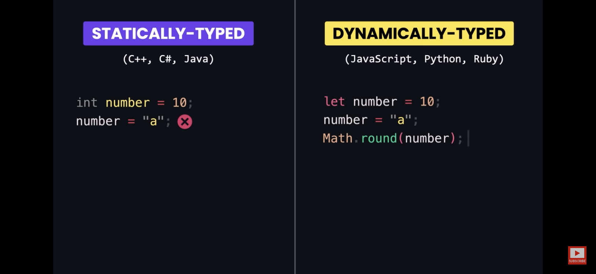

MY CODING JOURNEY
~3 month progress.
About me:
Hello, my name is Justin Xie. I was born in an average Asian household. Growing up, I enjoyed building stuff like legos, messing around on computers and playing video games. I enjoyed creating things out of the legos I had. The first games I used to play were on a Nintendo DS; Mario Kart, Cooking Mama, Kirby, Pokemon, etc, with a family friend. The first computer game I played was Roblox back in 2012, and that was when I discovered the possibility to create things in the studio. I was always curious on how games and websites functioned so I wanted to continue studying programming and get a job as a software engineer in the future because of how fun it is to create stuff in code. Thus, this is why I decided to learn coding for Capstone, from no experience.
Goal:
Learn to code from scratch in 3 months, and then build my own website.
- Brainstorm
- Find Mentor
- Ask Questions
How:
Learn the basic foundations.
- Research
- Notes
- Shadowing
Trial & Error:
The challenges I encountered throughout this semester.
- Lack of Motivation
- Mental Health
- Feature Creep
What did I learn in 3 months?
I learned that In three months of focused programming, you can become proficient in a programming language and complete a small project like a website or app, and tackle coding challenges by debugging and understanding the mistake. There are also collaboration tools, version control with Git, and basics of databases that I didn't have the chance to learn, as the time to complete my Capstone was limited.
I learned web development using HTML, CSS, and JavaScript, and explored some frameworks like ReactJS for websites. However, I did not use it since this is just a project for Capstone, and it takes too long to learn everything. I discovered platforms like LeetCode to practice problem-solving, and soft skills like communication. Creating a portfolio to showcase your projects is also a good way for job applications.
The principle to being a good programmer is the consistency of practicing and the willingness to learn.
Commonly used languages [IMPORTANT]
Study the 3 important languages to start off
-
HTML
The markup language: Short for Hypertext Markup Language, the building blocks for website pages. [skeleton]
-
CSS
The styling language: Short for Cascading Stylesheet, used for styling webpages and making them beautiful/aesthetic. [skin]
-
JS
The programming language: Known as Javascript, used for functionality in pages such as elements or data. [brain]
Monthly Progress:
The journey.
-
September:
I watched MANY YouTube videos and took notes on HTML, CSS, and JS.
-
October
I continued studying code and experimented in VS Code, until I got used to using coding vocabulary. I proceeded to use this knowledge to practice coding my very first website.
-
November:
I shadowed and coded 3 projects that will aid me in coding my final website. It took a lot of effort as I had about a month left. The 3 projects gave me some experience in debugging.
-
December - January:
I used all my self-taught knowledge and started coding my final website. I completed it in January and sent it to my friends and mentor for their feedbacks. It was a good rating overall.
The challenges I encountered:
As a beginner, programming presents several challenges. Understanding complex syntax, logic, and problem-solving was daunting. Brainstorming ideas about what to do for my website was the longest part. Sometimes there were many things I wanted to add, but it becomes too hard and complicated [called feature creep]. I initially had no idea what to do for my website [this current one], but I managed to pull through and bring out a completed project.
Debugging was the most frustrating because I had to scroll all the way back and proofread the code, figuring out what I did wrong forr whatever I wanted to work, not work. My most common mistakes were typos and forgetting to include punctuations/letters.
The lack of motivation prevented me from coding, however, I overcame it by doing what I enjoyed, such as coding something fun, and watching different YouTubers, finding the right one I prefer.
I learned that overcoming these challenges involved patience, consistent practice, seeking help from my mentor, and breaking down problems into smaller, manageable tasks.
Experiment Project:
I learned HTML, CSS, and Javascript through watching YouTube videos and taking notes.
I looked up the things I wanted to learn and code. Later on, I coded 3 projects to help me further with experimenting how the code works and experiencing some bugs that I had to debug. It was VERY time consuming.
The HTML video:
I learned the concepts of HTML through watching Bro Code on YouTube. Bro Code helped me understand the basic structure of HTML.
CSS video:
Yes, I know it says HTML. However, this video covers BOTH HTML & CSS. This video allowed me to understand more of the two languages. Some of the terms I learned:

Javascript vs Typescript:
This video, specifically "Programming with Mosh" has taught me both HTML, CSS, and Javascript. Javascript is very broad with functionality, et cetera. But, what's the difference between Javascript and Typescript?
Broader detail with pictures:
-
Comparison
 -
Benefits
-
Transpilation
The 3 projects I coded:
-
Password Generator
-
[Christmas] countdown
-
Hangman Game
Mentorship & Future:
My mentor is a Software Engineer who works at an artificial intelligence company called Cognosys.AI. He is also my brother-in-law. He gave me recommendations of languages and frameworks to learn for this project. He went over some terms used, this allowed me to be familiar with what to do and use.
Doing this Capstone project has allowed me to be more familiar with what it is like to code and build stuff. It has opened me up to times of stress and lack of motivation, and ways to deal with them to keep moving forward. This project will help get me a headstart in understanding concepts in post-secondary as my goal is to study as a Software Engineer and land a good job. I enjoyed building this projectand I want to continue doing so. Pursing this path will allow me to enjoy my job as I would be working until I retire.

Conclusion:
Feel free to explore.
Links to my projects:
Feel free to check them out yourself!
The end :D
Thanks for visiting!